WWDC 2021: What's new in UIKit
Find hereafter a detailed summary of the above named video which belongs to a taxonomy of some WWDC footages.
The original video is available on the official Apple website (session 10059).
"Discover the latest updates and improvements to UIKit and learn how to build better iPadOS, iOS, and Mac Catalyst apps. We'll take you through UI refinements, productivity updates, and API enhancements, and help you explore performance improvements and security & privacy features."
Various contents of this video are indicated hereunder:
Most of the illustrations are parts of the Apple presentations and may be available at the Resources section inside the Overview sheet of each video.
Hereafter, the underlined elements lead directly to the playback of the WWDC video at the appropriate moment.
Productivity #
iPad multitasking new features are highlighted with code snippets in demos dealing with:
- The Mail App.
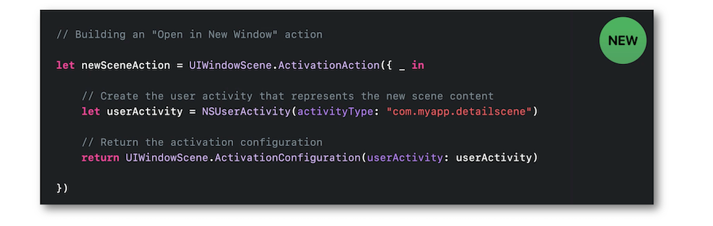 - The pointer selection.
- The keyboard shortcuts
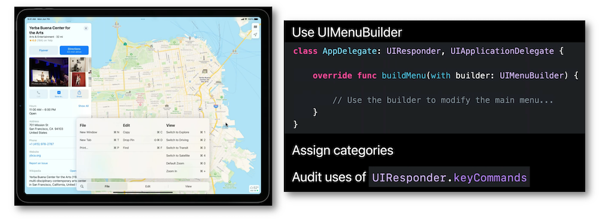. - The keyboard focus and navigation.
- The Drag and Drop feature between applications also available for iPhone since iOS 15.
UI refinements #
In addition to using more efficiently the SF Symbols, solutions are provided for the appearance of UITabBar and UIToolBar that may encounter problems with the absence of background material when scrolled to bottom.
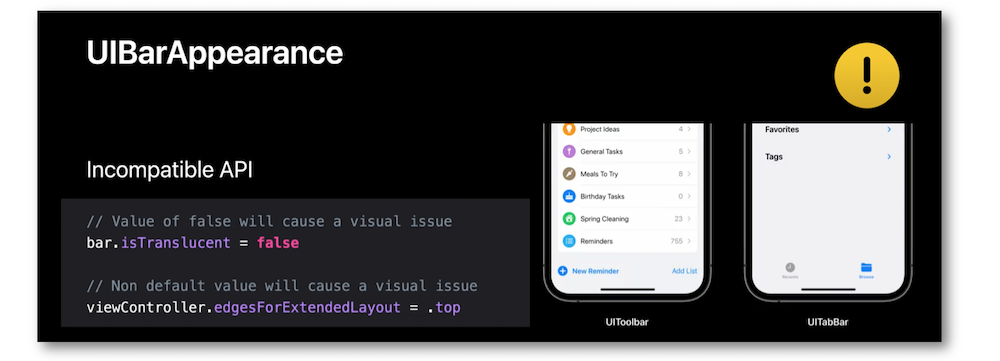
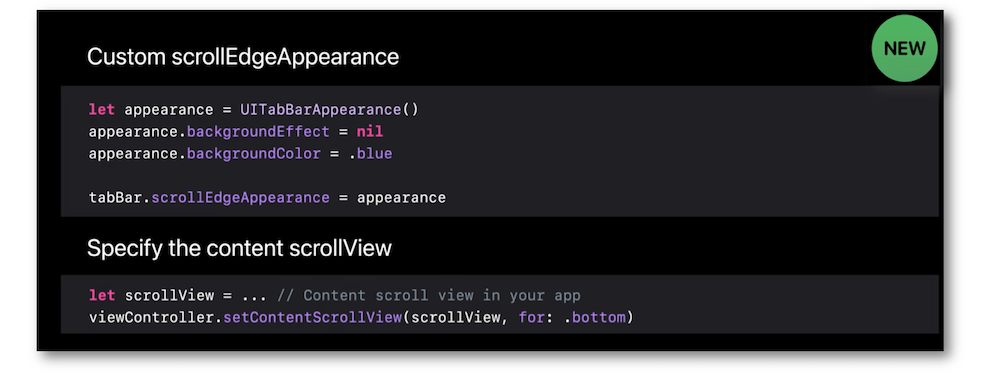
iOS 15 brought a new appearance for headers...
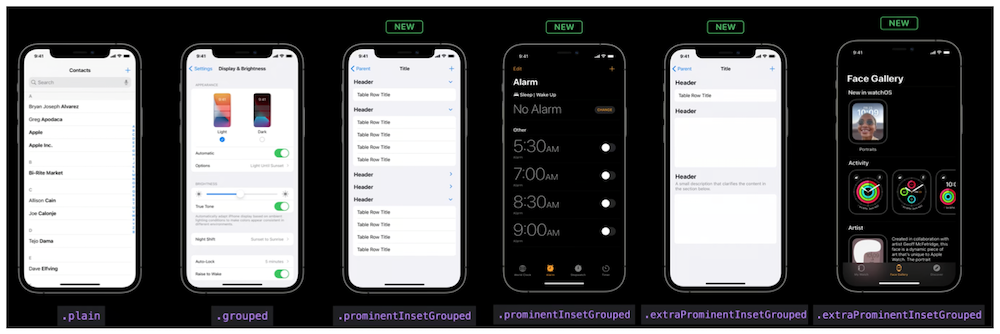
... that may be combined with a full control over separators and the brand new ability to cover half the screen for sheets (medium high detent functionality).
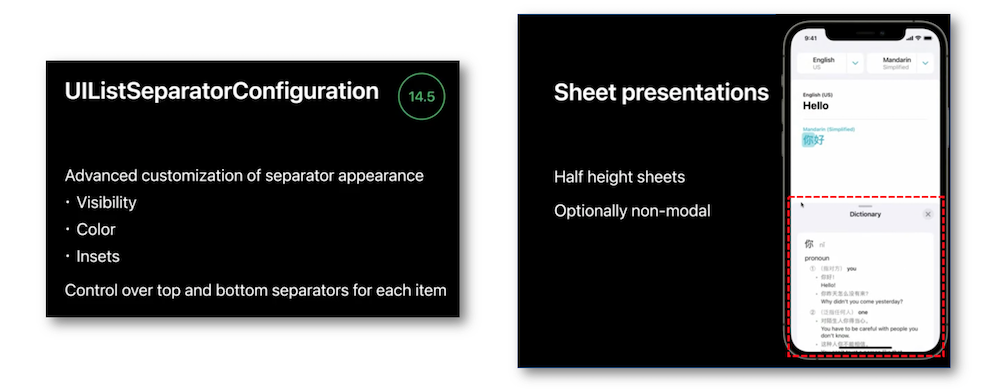
Not to mention the return of the scrolling wheels for the UIDatePicker.
API enhancements #
🎬 (10:17)
To make the buttons more efficient and more customizable, iOS 15 brought many important improvements based on the new UIButton.Configuration API:
- New background styles.
- Better resizing with the Dynamic Type feature.
- Multi-line text support.
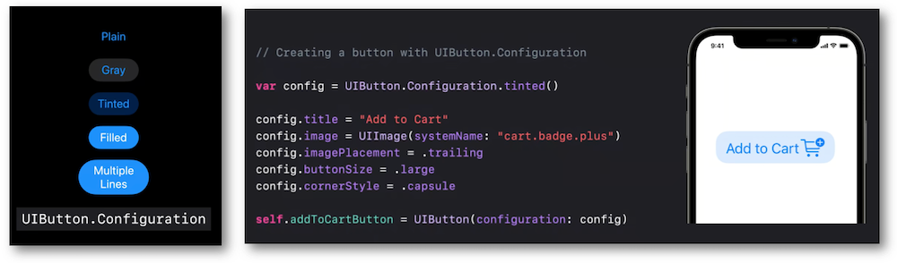
While iOS 14 supported setting menu to UIButton, iOS 15 enables the UIButton.Configuration to display the popUp and pullDown menus for the buttons.
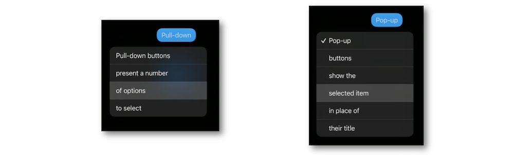
🎬 (12:38)
New ways to use colors with the SF Symbols are available with the iOS 15 release.
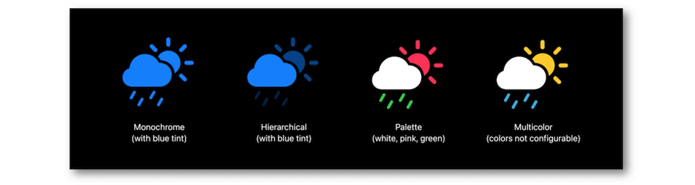
The implementation of these new modes come in handy...
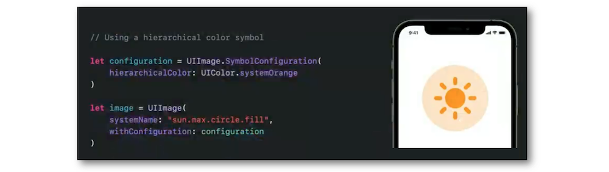
... and the iOS 15 new UIImage API greatly helps the use of the style variants.
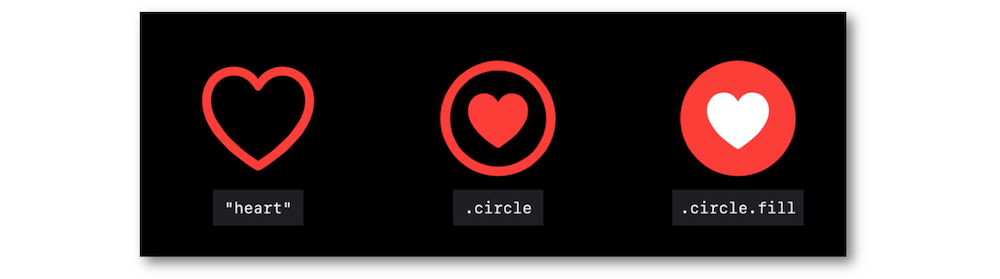
🎬 (15:38)
Besides the new UIColor.tintColor, the system colors has been unified accross all the Apple platforms and can be used for all the frameworks.
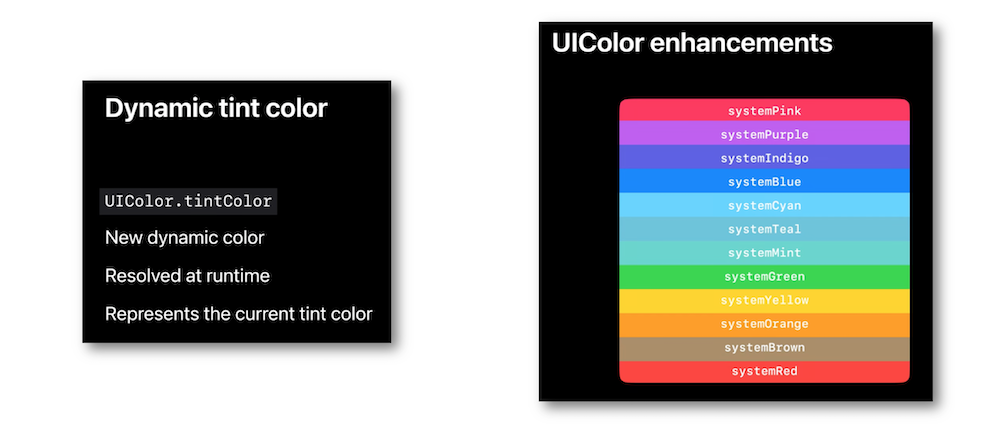
A new callback has been introduced in order to be updated in a more efficient way about changing colors with the UIColorPicker View Controller.
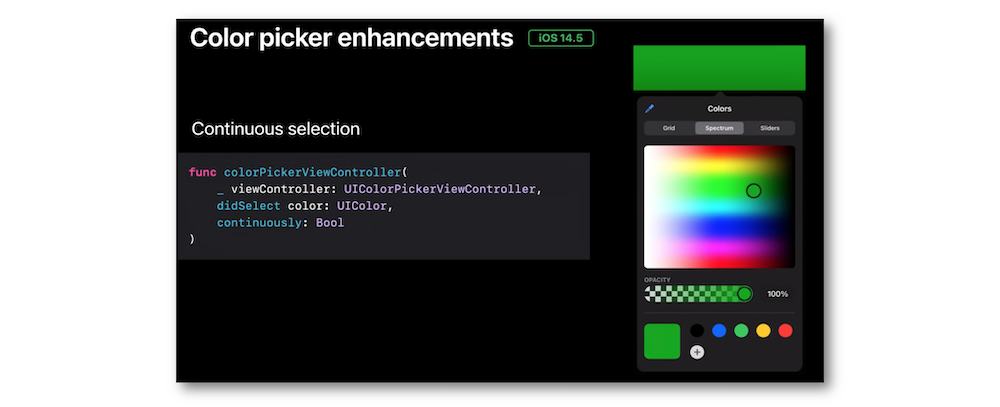
🎬 (19:06)
Now, closure-based handlers can be used to reconfigure the cells.
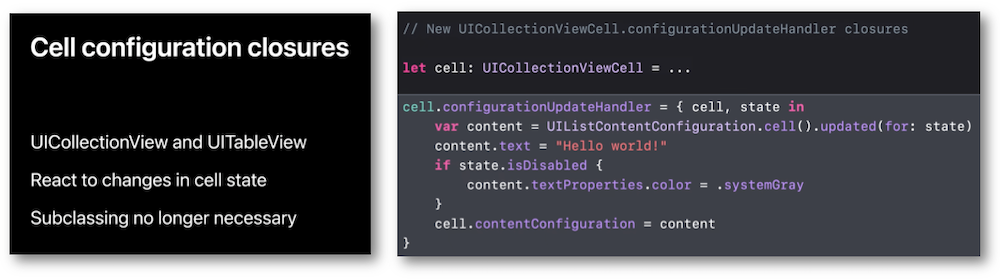
The updates of the collection and table views are now easier than ever thanks to the diffable data source enhancements.
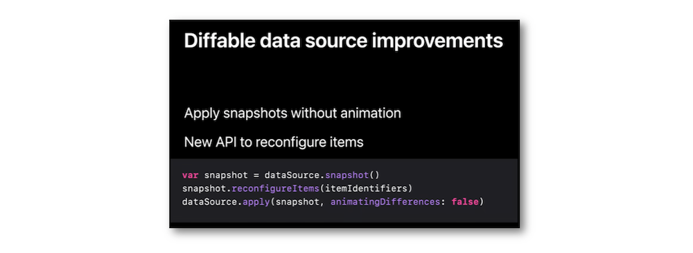
iOS 15 enables UIContextMenuInteraction to support collapsible submenus that don't replace entirely the original menu anymore.
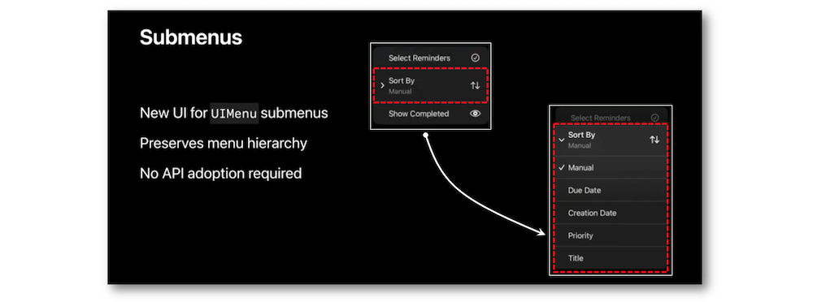
Regarding accessibility, the Dynamic Type feature adopts some content size category limits.
Introduction of a new TextKit version.
There are many significant improvements focused on the UIScene-based APIs that can be used by the UIKit apps as well. Moreover, new APIs have been also added to deal with the currently sharable content that's being interacting in each scene.
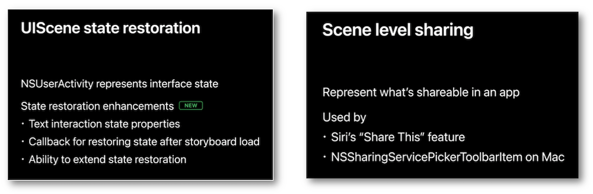
Performance #
Enhancements for smoother scrolling and animations are highlighted using the example of cells that display images.
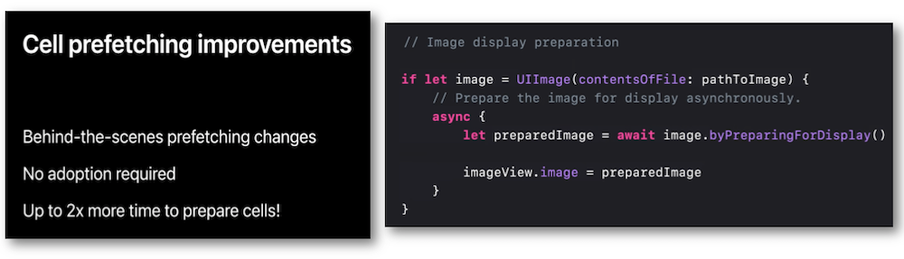
Now, an inside process is made for specific image size and type to anticipate the display under the best conditions.
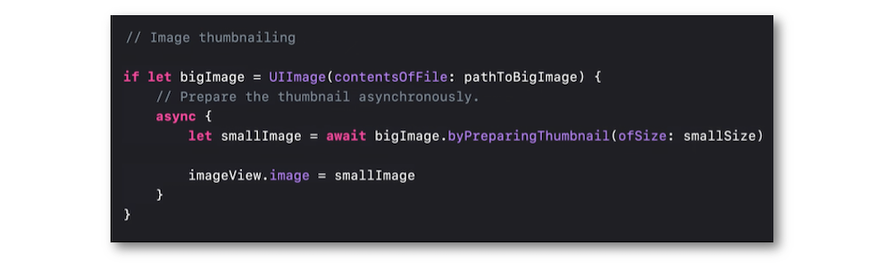
Security and privacy #
The new Location Button can be embedded in apps to provide the current location but only when some requirements are completely fulfilled.
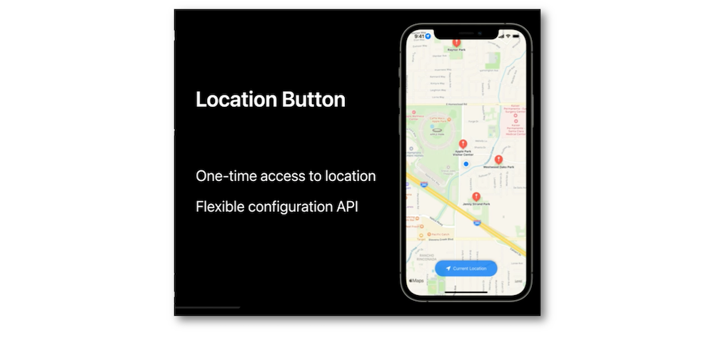
In the same way, the copy-paste banner is now removed in iOS 15 adding some new standard paste menu items.
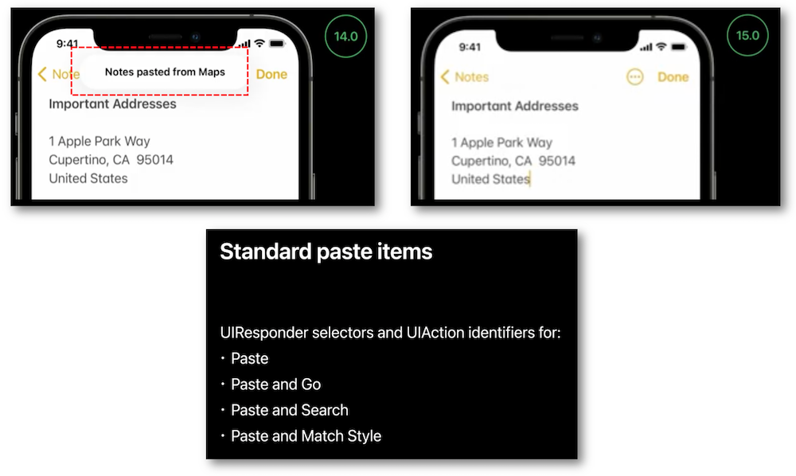
The standard Data Detectors types have been extended in order to check what type of data is on the pasteboard.
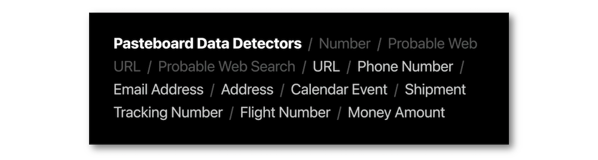
Finally, there's an App-to-Web Click Measurement that preserves privacy of ad clicks and taps.
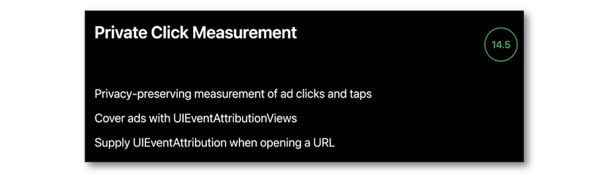